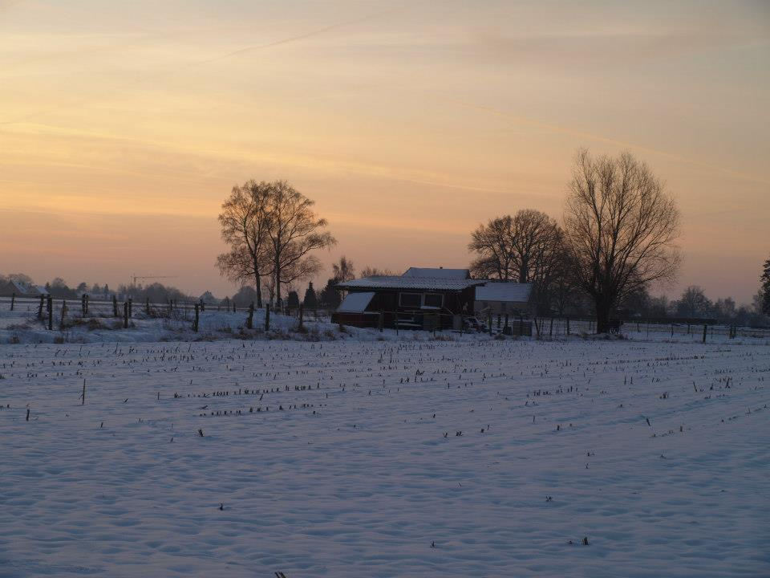
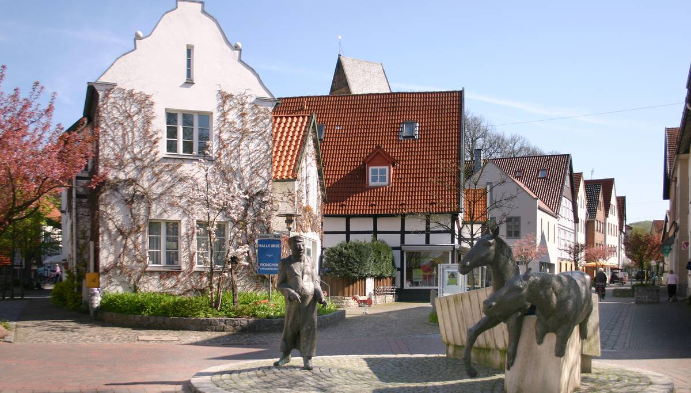
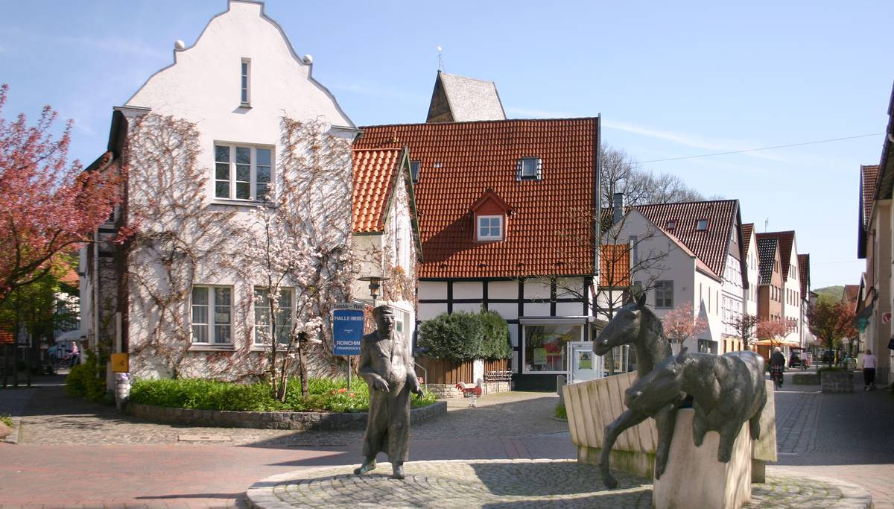
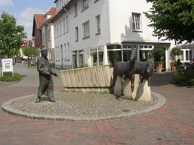
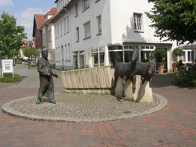

Halle Westf.
Bienvenue à Halle Westfalen
Une ville pour tous les visiteurs de l'allemagne.
Halle Westfalen est une ville de Rhénanie-du-Nord-Westphalie, située dans l'arrondissement de Gütersloh, dans le district de Detmold, dans le Landschaftsverband de Westphalie-Lippe.
Elle a environ 21 000 habitants. Elle est célèbre pour son tournoi de tennis sur gazon qui s'y déroule chaque année en juin dans le 'Gerry Weber Stadion'.
On y trouve également une importante fabrique de chocolats industriels. La firme s'appelle Storck et ses produits les plus célèbres portent le nom de « Toffifee » et « Merci ».
Halle est jumelée avec Ronchin dans le Nord de la France.
Les lieux à visiter
-
Storck
Symbole de Halle. August Storck est une entreprise agroalimentaire allemande. Elle produit notamment les Werther's Original. Selon l'International Cocoa Organization, l'entreprise se classe en 2014 à la dixième place des plus gros fabricants de chocolats au monde (2 272 de millions de chiffre d'affaires en dollar américain).
-
Gerry Weber Stadion
La Gerry-Weber-Stadion est un hall omnisports situé à Halle, en Rhénanie-du-Nord-Westphalie, où évolue le club de handball du TBV Lemgo lors de rencontres importantes.
-
Hermannsdenkmal
Le Hermannsdenkmal (monument d'Hermann) est un monument situé en Rhénanie-du-Nord-Westphalie en Allemagne dans le sud de la forêt de Teutberg, qui se trouve au sud-ouest de Detmold dans le district de Lippe. Il se dresse sur le mont densément boisé de Teutberg qui s'élève à 386 mètres, au centre de la fortification circulaire de Grotenburg. La statue mesure 24,82 mètres, auxquels s'ajoutent 28,62 mètres de socle, soit une hauteur totale de 53,44 mètres. Le monument célèbre le chef de guerre Cherusque Arminius (appelé Hermann en allemand) et la bataille de la forêt de Teutberg qui vit les tribus germaniques sous le commandement d'Arminius vaincre de manière décisive trois légions romaines de Varus en l'an 9 apr. J.-C.
-
Arminia Bielefeld
Le Arminia Bielefeld (nom complet: Deutscher Sportclub Arminia Bielefeld e. V.) est un club sportif basé à Bielefeld (à côté de Halle Westf.) en Allemagne. Outre le football, il propose le Hockey, le patinage artistique, le billard ou le sport sur fauteuils roulant. L'Arminia Bielefeld a actuellement 12.207 Membres (Mis à jour: Juli 2015). Les couleurs du club sont le Bleu, le Blanc et le Noir. Le nom du club vient du prince Arminius. L' Arminia Bielefelda connu sept promotions en 1. Bundesliga, pour sept relégations. Sa meilleure phase était les années 1920, où le club a remporté deux championnats de l'Ouest de l'Allemagne consécutifs
Découvrez la beauté de Halle Westfalen
 


 
